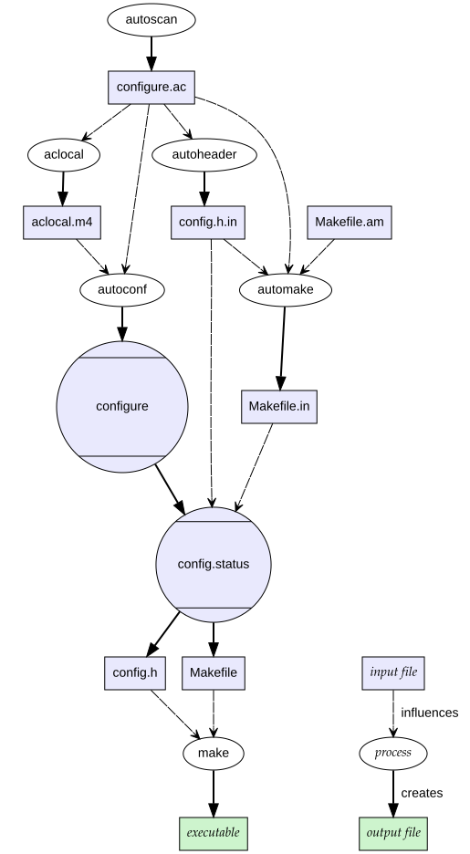

Autotools¶
Autotools is a GNU build system that provides a build-script generator.
By running the platform-independent ./configure script that comes with the package, you can generate a platform-dependent Makefile.
Phases¶
The AutotoolsBuilder and AutotoolsPackage base classes come with the following phases:
autoreconf- generate the configure scriptconfigure- generate the Makefilesbuild- build the packageinstall- install the package
Most of the time, the autoreconf phase will do nothing, but if the package is missing a configure script, autoreconf will generate one for you.
The other phases run:
$ ./configure --prefix=/path/to/installation/prefix
$ make
$ make check # optional
$ make install
$ make installcheck # optional
Of course, you may need to add a few arguments to the ./configure line.
Important files¶
The most important file for an Autotools-based package is the configure script.
This script is automatically generated by Autotools and generates the appropriate Makefile when run.
警告
Watch out for fake Autotools packages!
Autotools is a very popular build system, and many people are used to the classic steps to install a package:
$ ./configure
$ make
$ make install
For this reason, some developers will write their own configure scripts that have nothing to do with Autotools.
These packages may not accept the same flags as other Autotools packages, so it is better to use the Package base class and create a custom build system.
You can tell if a package uses Autotools by running ./configure --help and comparing the output to other known Autotools packages.
You should also look for files like:
configure.acconfigure.inMakefile.am
Packages that don't use Autotools aren't likely to have these files.
Build system dependencies¶
Whether or not your package requires Autotools to install depends on how the source code is distributed.
Most of the time, when developers distribute tarballs, they will already contain the configure script necessary for installation.
If this is the case, your package does not require any Autotools dependencies.
However, a basic rule of version control systems is to never commit code that can be generated.
The source code repository itself likely does not have a configure script.
Developers typically write (or auto-generate) a configure.ac script that contains configuration preferences and a Makefile.am script that contains build instructions.
Then, autoconf is used to convert configure.ac into configure, while automake is used to convert Makefile.am into Makefile.in.
Makefile.in is used by configure to generate a platform-dependent Makefile for you.
The following diagram provides a high-level overview of the process:

GNU autoconf and automake process for generating makefiles by Jdthood under CC BY-SA 3.0¶
{kind=link}
If a configure script is not present in your tarball, you will need to generate one yourself.
Luckily, Spack already has an autoreconf phase to do most of the work for you.
By default, the autoreconf phase runs:
$ autoreconf --install --verbose --force -I <aclocal-prefix>/share/aclocal
In case you need to add more arguments, override autoreconf_extra_args in your package.py on class scope like this:
autoreconf_extra_args = ["-Im4"]
All you need to do is add a few Autotools dependencies to the package.
Most stable releases will come with a configure script, but if you check out a commit from the master branch, you would want to add:
depends_on("autoconf", type="build", when="@master")
depends_on("automake", type="build", when="@master")
depends_on("libtool", type="build", when="@master")
It is typically redundant to list the m4 macro processor package as a dependency, since autoconf already depends on it.
Using a custom autoreconf phase¶
In some cases, it might be needed to replace the default implementation of the autoreconf phase with one running a script interpreter.
In this example, the bash shell is used to run the autogen.sh script.
def autoreconf(self, spec, prefix):
which("bash")("autogen.sh")
If the package.py has build instructions in a separate builder class, the signature for a phase changes slightly:
class AutotoolsBuilder(AutotoolsBuilder):
def autoreconf(self, pkg, spec, prefix):
which("bash")("autogen.sh")
patching configure or Makefile.in files¶
In some cases, developers might need to distribute a patch that modifies one of the files used to generate configure or Makefile.in.
In this case, these scripts will need to be regenerated.
It is preferable to regenerate these manually using the patch, and then create a new patch that directly modifies configure.
That way, Spack can use the secondary patch and additional build system dependencies aren't necessary.
Old Autotools helper scripts¶
Autotools based tarballs come with helper scripts such as config.sub and config.guess.
It is the responsibility of the developers to keep these files up to date so that they run on every platform, but for very old software releases this is impossible.
In these cases Spack can help to replace these files with newer ones, without having to add the heavy dependency on automake.
Automatic helper script replacement is currently enabled by default on ppc64le and aarch64, as these are the known cases where old scripts fail.
On these targets, AutotoolsPackage adds a build dependency on gnuconfig, which is a very lightweight package with newer versions of the helper files.
Spack then tries to run all the helper scripts it can find in the release, and replaces them on failure with the helper scripts from gnuconfig.
To opt out of this feature, use the following setting:
patch_config_files = False
To enable it conditionally on different architectures, define a property and make the package depend on gnuconfig as a build dependency:
depends_on("gnuconfig", when="@1.0:")
@property
def patch_config_files(self):
return self.spec.satisfies("@1.0:")
备注
On some exotic architectures it is necessary to use system provided config.sub and config.guess files.
In this case, the most transparent solution is to mark the gnuconfig package as external and non-buildable, with a prefix set to the directory containing the files:
gnuconfig:
buildable: false
externals:
- spec: gnuconfig@master
prefix: /usr/share/configure_files/
force_autoreconf¶
If for whatever reason you really want to add the original patch and tell Spack to regenerate configure, you can do so using the following setting:
force_autoreconf = True
This line tells Spack to wipe away the existing configure script and generate a new one.
If you only need to do this for a single version, this can be done like so:
@property
def force_autoreconf(self):
return self.version == Version("1.2.3")
Finding configure flags¶
Once you have a configure script present, the next step is to determine what option flags are available.
These flags can be found by running:
$ ./configure --help
configure will display a list of valid flags separated into some or all of the following sections:
Configuration
Installation directories
Fine tuning of the installation directories
Program names
X features
System types
Optional Features
Optional Packages
Some influential environment variables
For the most part, you can ignore all but the last 3 sections. The "Optional Features" section lists flags that enable/disable features you may be interested in. The "Optional Packages" section often lists dependencies and the flags needed to locate them. The "environment variables" section lists environment variables that the build system uses to pass flags to the compiler and linker.
Adding flags to configure¶
For most of the flags you encounter, you will want a variant to optionally enable/disable them.
You can then optionally pass these flags to the configure call by overriding the configure_args function like so:
def configure_args(self):
args = []
...
if self.spec.satisfies("+mpi"):
args.append("--enable-mpi")
else:
args.append("--disable-mpi")
return args
Alternatively, you can use the enable_or_disable helper:
def configure_args(self):
args = []
...
args.extend(self.enable_or_disable("mpi"))
return args
Note that we are explicitly disabling MPI support if it is not requested. This is important, as many Autotools packages will enable options by default if the dependencies are found, and disable them otherwise. We want Spack installations to be as deterministic as possible. If two users install a package with the same variants, the goal is that both installations work the same way. See here and here for a rationale as to why these so-called "automagic" dependencies are a problem.
备注
By default, Autotools installs packages to /usr.
We don't want this, so Spack automatically adds --prefix=/path/to/installation/prefix to your list of configure_args.
You don't need to add this yourself.
Helper functions¶
You may have noticed that most of the Autotools flags are of the form --enable-foo, --disable-bar, --with-baz=<prefix>, or --without-baz.
Since these flags are so common, Spack provides a couple of helper functions to make your life easier.
enable_or_disable¶
Autotools flags for simple boolean variants can be automatically generated by calling the enable_or_disable method.
This is typically used to enable or disable some feature within the package.
variant(
"memchecker",
default=False,
description="Memchecker support for debugging [degrades performance]",
)
...
def configure_args(self):
args = []
...
args.extend(self.enable_or_disable("memchecker"))
return args
In this example, specifying the variant +memchecker will generate the following configuration options:
--enable-memchecker
with_or_without¶
Autotools flags for more complex variants, including boolean variants and multi-valued variants, can be automatically generated by calling the with_or_without method.
variant(
"schedulers",
values=disjoint_sets(
("auto",), ("alps", "lsf", "tm", "slurm", "sge", "loadleveler")
).with_non_feature_values("auto", "none"),
description="List of schedulers for which support is enabled; "
"'auto' lets openmpi determine",
)
if not spec.satisfies("schedulers=auto"):
config_args.extend(self.with_or_without("schedulers"))
In this example, specifying the variant schedulers=slurm,sge will generate the following configuration options:
--with-slurm --with-sge
enable_or_disable is actually functionally equivalent to with_or_without, and accepts the same arguments and variant types; but idiomatic Autotools packages often follow these naming conventions.
activation_value¶
Autotools parameters that require an option can still be automatically generated, using the activation_value argument to with_or_without (or, rarely, enable_or_disable).
variant(
"fabrics",
values=disjoint_sets(
("auto",), ("psm", "psm2", "verbs", "mxm", "ucx", "libfabric")
).with_non_feature_values("auto", "none"),
description="List of fabrics that are enabled; 'auto' lets openmpi determine",
)
if not spec.satisfies("fabrics=auto"):
config_args.extend(self.with_or_without("fabrics", activation_value="prefix"))
activation_value accepts a callable that generates the configure parameter value given the variant value; but the special value prefix tells Spack to automatically use the dependency's installation prefix, which is the most common use for such parameters.
In this example, specifying the variant fabrics=libfabric will generate the following configuration options:
--with-libfabric=</path/to/libfabric>
The variant keyword¶
When Spack variants and configure flags do not correspond one-to-one, the variant keyword can be passed to with_or_without and enable_or_disable.
For example:
variant("debug_tools", default=False)
config_args += self.enable_or_disable("debug-tools", variant="debug_tools")
Or when one variant controls multiple flags:
variant("debug_tools", default=False)
config_args += self.with_or_without("memchecker", variant="debug_tools")
config_args += self.with_or_without("profiler", variant="debug_tools")
Conditional variants¶
When a variant is conditional and its condition is not met on the concrete spec, the with_or_without and enable_or_disable methods will simply return an empty list.
For example:
variant("profiler", when="@2.0:")
config_args += self.with_or_without("profiler")
will neither add --with-profiler nor --without-profiler when the version is below 2.0.
Activation overrides¶
Finally, the behavior of either with_or_without or enable_or_disable can be overridden for specific variant values.
This is most useful for multi-value variants where some of the variant values require atypical behavior.
def with_or_without_verbs(self, activated):
# Up through version 1.6, this option was named --with-openib.
# In version 1.7, it was renamed to be --with-verbs.
opt = "verbs" if self.spec.satisfies("@1.7:") else "openib"
if not activated:
return f"--without-{opt}"
return f"--with-{opt}={self.spec['rdma-core'].prefix}"
Defining with_or_without_verbs overrides the behavior of a fabrics=verbs variant, changing the configure-time option to --with-openib for older versions of the package and specifying an alternative dependency name:
--with-openib=</path/to/rdma-core>
Configure script in a sub-directory¶
Occasionally, developers will hide their source code and configure script in a subdirectory like src.
If this happens, Spack won't be able to automatically detect the build system properly when running spack create.
You will have to manually change the package base class and tell Spack where the configure script resides.
You can do this like so:
configure_directory = "src"
Building out of source¶
Some packages like gcc recommend building their software in a different directory than the source code to prevent build pollution.
This can be done using the build_directory variable:
build_directory = "spack-build"
By default, Spack will build the package in the same directory that contains the configure script.
Build and install targets¶
For most Autotools packages, the usual:
$ configure
$ make
$ make install
is sufficient to install the package. However, if you need to run make with any other targets, for example, to build an optional library or build the documentation, you can add these like so:
build_targets = ["all", "docs"]
install_targets = ["install", "docs"]
Testing¶
Autotools-based packages typically provide unit testing via the check and installcheck targets.
If you build your software with spack install --test=root, Spack will check for the presence of a check or test target in the Makefile and run make check for you.
After installation, it will check for an installcheck target and run make installcheck if it finds one.
External documentation¶
For more information on the Autotools build system, see: https://www.gnu.org/software/automake/manual/html_node/Autotools-Introduction.html